· EEM312
EEM312 Sayısal Elektronik: Kısa Sınavlar ve Yanıtları (2006–2009)
EEM312 – Sayısal Elektronik · 13.03.2006 · 16.10.2026
Bu yazı, Başkent Üniversitesi EEM312 Sayısal Elektronik dersinde (Prof. Dr. Emin Akata) 2006–2009 yılları arasında yapılan on kısa sınavı (quiz) yanıtlarıyla birlikte bir araya getiriyor. Yanıtlar hocanın yayımladığı çözüm belgelerinden aktarıldı; bazı soruların yanıtı belgede yok. Arşivdeki aynı sınavın kopyaları (2007 Kısa Sınav-2'nin üç kopyası gibi) bir kez alındı. Orijinal Word dosyaları yazının sonunda ZIP olarak indirilebilir.
2006 Quiz-1 (13.03.2006)
Soru 1 (60p): VTC'den gürültü payları
VTC'si verilen tersleyici için V_OH, V_OL, V_IL, V_IH, V_M ve V_sw değerlerini bulunuz, VTC üzerinde işaretleyiniz. NM_H, NM_L ve belirsiz bölge (undefined region) ne kadardır? Yorumlayınız.
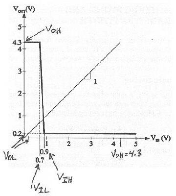
Yanıt:
- V_OH = 4,3 V, V_OL = 0,2 V, V_IL = 0,7 V, V_IH = 0,9 V, V_M ≅ 0,9 V
- V_sw = V_OH − V_OL = 4,3 − 0,2 = 4,1 V
- NM_H = V_OH − V_IH = 4,3 − 0,9 = 3,4 V
- NM_L = V_IL − V_OL = 0,7 − 0,2 = 0,5 V
- Belirsiz bölge = V_IH − V_IL = 0,9 − 0,7 = 0,2 V
Devrenin aşırı derecede asimetrik bir salınım yapısı var (V_M, V_sw'nin %20'si içinde). Gürültü payları da eşit değil; NM_L çok dar.
Soru 2 (40p): Ters kutuplanmış p-n eklemi
Ters kutuplanmış bir p-n ekleminde terminal akımı 10 nA ölçülüyor. Ölçüm sıcaklığında drift akımı 15 nA olduğuna göre difüzyon akımı ne olmalıdır? Akımların yönlerini gösteriniz. Sıcaklık artarsa terminal akımı nasıl değişir, niçin?
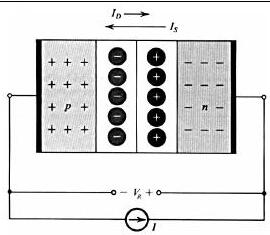
Yanıt: Ters kutuplanmış bir p-n ekleminde terminal akımı I = I_S − I_D'dir; I_S drift (doyma) akımı, I_D difüzyon akımıdır. Ters kutuplama nedeniyle artan bariyer gerilimi I_D'yi azaltmıştır. Buna göre I_D = I_S − I = 15 − 10 = 5 nA. Sıcaklık artarsa azınlık taşıyıcısı (minority carrier) sayısı artar, I_S de artar; dolayısıyla terminal akımı da artar.
2006 Quiz-2 (01.05.2006)
Soru 1a: Gürültülü yüksek seviye için tersleyici tasarımı
Girdi sinyalinin yüksek seviyesi gürültülü olan bir uygulama için CMOS tersleyici tasarlamak durumunda olsaydınız ne yapardınız?
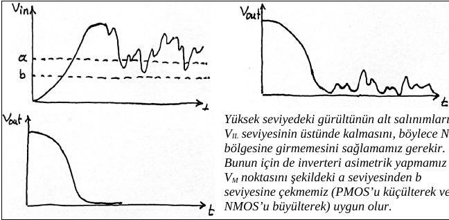
Yanıt: Yüksek seviyedeki gürültünün alt salınımlarının V_IL seviyesinin üstünde kalmasını, böylece NM_L bölgesine girmemesini sağlamak gerekir. Bunun için tersleyiciyi asimetrik yapmak ve V_M noktasını şekildeki a seviyesinden b seviyesine çekmek (PMOS'u küçülterek veya NMOS'u büyüterek) uygun olur.
Soru 1b: Self loading
CMOS tersleyici performans optimizasyonunda "self loading" nedir, niçin oluşur?
Yanıt: Performans artırımı için tasarımcının elindeki en etkin araçlardan biri W/L oranını büyütmektir; azalan dirençler t_p'yi de azaltır. Ancak bu işlem dirençleri azaltırken iç sığaları (C_int) da büyütür. C_L = C_int + C_ext içinde C_int baskın hale geldiğinde, direnç küçültmenin yararı sığa artışıyla yok olur; W/L'yi daha fazla büyütmek performansı anlamlı ölçüde iyileştirmeden transistörleri (ve tümleşik devre alanını) büyütür. Bu duruma self loading denir.
Soru 1c: Gate-drain sığası ve Miller etkisi
0,25 µm CMOS teknolojisiyle üretilen bir tersleyicide 0,115 fF'lık gate-drain sığası çıkışa ne kadar yük getirir?
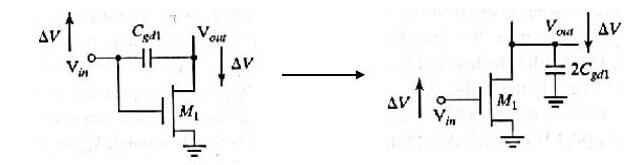
Yanıt: Gate-drain sığası giriş ile çıkış arasına seri bağlıdır. Uçlarında eşit büyüklükte ama zıt yönde gerilim değişimi olduğundan, Miller etkisi ile çıkışa paralel bağlı, iki katı değerde bir sığayla değiştirilebilir. Yani çıkışa 2 × 0,115 = 0,23 fF yük getirir.
Soru 2: Tersleyici zinciri
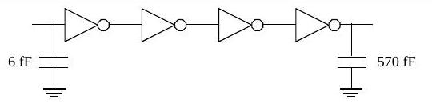
Bu kurguda uygulanacak ölçekleme faktörü ve normalize gecikme (t_p/t_p0) nedir? Tek tersleyiciye göre gecikme iyileşmesi ne kadardır? (γ = 1)
Yanıt:
- Toplam etkin fan-out: F = C_L / C_g,1 = 570 / 6 = 95
- Tek tersleyicili (unbuffered) gecikme: t_p0 (1 + F/γ) = 96 t_p0
- N = 4 için: t_p = N t_p0 (1 + F^(1/N)/γ) = 4 t_p0 (1 + 95^(1/4))
- t_p / t_p0 = 4 (1 + 3,12) = 16,49; ölçekleme faktörü f = 95^(1/4) ≈ 3,12
- Oransal iyileşme = 96 / 16,49 = 5,82
(Puanlama: 1. sorunun her şıkkı 15p, 2. soru 55p; süre 30 dk.)
2007 Quiz-1 (14.03.2007)
Soru 1: Gürültü payları verilen tersleyicinin VTC'sini düz çizgilerle çiziniz; V_OL, V_OH, V_IL, V_IH, V_SW değerlerini yazıp VTC üzerinde gösteriniz; V_M'yi ve gürültü sınırlarını belirtiniz. Bu tersleyici kullanışlı mıdır?
Yanıt: NM_H = V_OH − V_IH = 4,5 − 1,5 = 3 V, NM_L = V_IL − V_OL = 1 − 0,5 = 0,5 V. NM_L çok dar olduğundan düşük mantık seviyesinde gürültü duyarlılığı çok yüksektir. Ayrıca VTC simetrik değildir (V_M aşağıda) ve çıkış rail-to-rail (0–5 V) salınım yapamaz; yalnızca 0,5–4,5 V arasında salınır (V_SW = 4 V). Bu nedenlerle tersleyici kullanışlı değildir. (Aynı soru, sayısal değerleriyle birlikte 2009 Kısa Sınav-1'de de soruldu; şekli aşağıda.)
Soru 2: 2006 Quiz-1'in 2. sorusunun aynısı (yanıt: I_D = 5 nA).
2007 Kısa Sınav-2 (03.04.2007)
Soru 1: Hız doyumu
Hız doyumu (velocity saturation) nedir, nasıl oluşur? k_n′ = 115 × 10⁻⁶ A/V², W = 0,375 µm, L = 0,25 µm, V_T = 0,43 V, V_DSAT = 0,63 V olan ve V_GS = 2 V, V_DS = 1 V'ta ölçülen bir NMOS için I_D'yi bulunuz.
Yanıt: Taşıyıcı hızı düşük alanlarda elektrik alanla orantılıdır (sabit mobilite, eğim µ). Kanaldaki alan kritik değere (ξ_c ≈ 1,5 V/µm) ulaştığında taşıyıcılar birbirleriyle çarpışmaları nedeniyle hız doyumuna ulaşır. Kısa kanallı MOSFET'lerde V_DS arttıkça bu durum, V_DS daha V_GS − V_T değerine ulaşmadan ortaya çıkar.
Doyumda (V_DS > V_DSAT):
I_DSAT = k_n′ (W/L) [(V_GS − V_T) V_DSAT − V_DSAT²/2] = 115 × 10⁻⁶ × (0,375/0,25) × [(2 − 0,43) × 0,63 − 0,63²/2] = 136,4 µA
Not: Yanıtta "elektron ve deliklerin doyum hızları yaklaşık 10⁻⁵ m/s" yazıyor; doğrusu 10⁵ m/s'dir.
Soru 2: CMOS tersleyici
CMOS tersleyiciyi çizerek çalışmasını açıklayınız, VTC üzerinde transistörlerin durumlarını belirtiniz; CMOS'un tercih edilme nedenlerini açıklayınız.
Yanıt: CMOS tersleyici bir NMOS ve bir PMOS'tan oluşur; kapıları birleşik giriş, drenleri birleşik çıkıştır. Giriş düşükken NMOS kesimde, PMOS iletimdedir ve çıkış V_DD olur; giriş yüksekken NMOS iletimde, PMOS kesimdedir ve çıkış 0 olur. CMOS'un tercih edilme nedenleri:
- Tam (rail-to-rail) salınım yapar, az yer kaplar.
- Kararlı durumda çıkış ile V_DD ya da toprak arasında her zaman sınırlı dirençli bir yol vardır; çıkış empedansı düşüktür.
- Giriş direnci çok yüksektir, kararlı durumda giriş akımı neredeyse sıfırdır; fan-out yüksektir.
- Kararlı durumda besleme ile toprak arasında doğrudan yol yoktur; durağan güç tüketimi yoktur.
- Yayılım gecikmesi yük sığasına ve transistör dirençlerine bağlıdır.
2007 Kısa Sınav-3 (01.05.2007)
Soru 1a: 2 girişli bir NAND kapısında çıkışın 0'dan 1'e geçme olasılığını (P₀→₁) bulunuz; C_L = 1,125 pF, V_DD = 3 V için yükte harcanan dinamik enerjiyi hesaplayınız.
| A | B | (AB)′ |
|---|---|---|
| 0 | 0 | 1 |
| 0 | 1 | 1 |
| 1 | 0 | 1 |
| 1 | 1 | 0 |
Yanıt: P₀→₁ = P(out=0) × P(out=1) = ¼ × ¾ = 3/16 ≈ 0,19. E_dyn = C_L × V_DD² × P₀→₁ = 1,125 × 10⁻¹² × 9 × 0,19 = 1,9 pJ.
Soru 1b–1c: 2006 Quiz-2'deki self loading ve Miller etkisi sorularının aynısı (yanıt: 0,23 fF).
Soru 2: 5 fF giriş sığasından 625 fF yüke dört tersleyicilik zincir. Ölçekleme faktörü, t_p/t_p0 ve iyileşme oranı nedir? (γ = 1)
Yanıt: F = 625/5 = 125; tek tersleyicili gecikme t_p0 (1 + F/γ) = 126 t_p0. N = 4 için t_p = 4 t_p0 (1 + 125^(1/4)), t_p/t_p0 = 4 (1 + 3,34) = 17,36; ölçekleme faktörü f = 125^(1/4) = 3,34; iyileşme oranı 126 / 17,36 = 7,26. (Süre 25 dk.)
2008 Kısa Sınav-1 (06.03.2008)
Soru 1 (50p): Bir tersleyici için VTC'yi çizip V_OH, V_OL, V_IL, V_IH, V_M, V_sw, NM_H, NM_L ve belirsiz bölgeyi gösteriniz. İdeal tersleyici için bu değerler ne olur?
Yanıt (ideal tersleyici): V_OL = 0; V_OH = V_DD = V_sw; V_IL = V_IH = V_DD/2; NM_H = V_OH − V_IH = V_DD/2; NM_L = V_IL − V_OL = V_DD/2.
Soru 2 (25p): 5 V ile beslenen bir kapıda I_OH = 1 mA, I_OL = 3,18 mA; t_PHL = 1,4 ns, t_PLH = 3,2 ns. Güç-gecikme çarpımı (PDP) nedir?
Yanıt: P_ort = 5 V × (1 + 3,18) mA / 2 ≈ 10,5 mW; t_p,ort = (1,4 + 3,2)/2 = 2,3 ns; PDP = 10,5 × 2,3 ≈ 24,2 pJ.
Soru 3 (25p): Intel P5 mikroişlemci üretiminde değişken maliyetler mi, sabit maliyetler mi daha önemlidir?
Yanıt: IC maliyeti = değişken maliyet + (sabit maliyet / üretilen IC adedi). Intel gibi büyük pazar payıyla çok yüksek adetlerde üretilen bir IC'de sabit maliyet adede bölündüğünden değişken maliyetler daha etkili ve önemlidir.
Not: Yanıtta soru "Intel P4" diye anılıyor; soruda P5 yazıyor.
2008 Kısa Sınav-2 (17.04.2008)
Soru 1a: MOS kapı sığaları
Çizelgede gate-channel sığalarının (C_GCB, C_GCS, C_GCD) sıfır olduğu durumları işaretleyiniz.
| Bölge | C_GCB | C_GCS | C_GCD |
|---|---|---|---|
| Kesim (cutoff) | 0 | 0 | |
| Doğrusal (resistive) | 0 | ||
| Doyum (saturation) | 0 | 0 |
Yanıt: Kesimde yalnızca C_GCB vardır; kanal oluşmadığından tüm sığa gate ile body arasında görülür. Doğrusal bölgede boydan boya uzanan iletken kanal gate ile body arasında perde oluşturur. Doyumda da C_GCB sıfırdır; ayrıca pinch-off noktasında (drain ucu) kanal bittiği için C_GCD de sıfırdır.
Soru 1b: Miller etkisi sorusu (yanıt: 0,23 fF).
Soru 2: Çalışma bölgeleri
V_DD = 2,5 V, V_Tp = −0,4 V, V_Tn = 0,4 V, V_DSATp = −1 V, V_DSATn = 0,6 V, λ = 0 için aşağıdaki transistörler hangi bölgede çalışır?
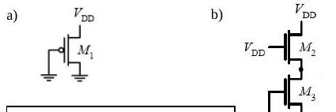
Yanıt:
- (a) V_GS1 = V_DS1 = −2,5 V; V_GT1 = V_GS1 − V_Tp = −2,5 + 0,4 = −2,1 V. |V_DSAT1| < |V_GT1| < |V_DS1| olduğundan M1 hız doyumunda (velocity saturation).
- (b) V_GS3 = 0 < V_T3 olduğundan M3 kesimde; I_D2 = I_D3 = 0 olduğundan M2 de kesimde.
Soru 3: W_p ve W_n'nin VTC'ye etkisi
Tersleyicinin VTC'si W_p ve W_n'deki değişimlere göre nasıl değişir?
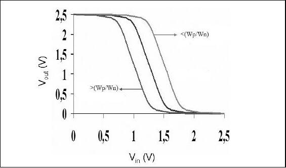
Yanıt belgesindeki grafik: W_p/W_n oranı büyüdükçe VTC (ve V_M) sağa, küçüldükçe sola kayar.
2008 Kısa Sınav-3 (13.05.2008)
Soru 1 (50p): Logical effort ile boyutlandırma
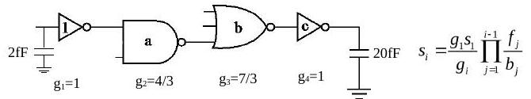
Girişten çıkışa giden yolda minimum gecikme için a, b ve c boyutlarını bulunuz. (Minimum boyutlu tersleyicide NMOS/PMOS oranı ½.)
Yanıt:
- 2 girişli NAND logical effort = (n + 2)/3 = 4/3; 3 girişli NOR logical effort = (2n + 1)/3 = 7/3
- Etkin fan-out F = 20/2 = 10
- Yol logical effort G = 1 × 4/3 × 7/3 × 1 = 28/9 = 3,11
- Dallanma yok (B = 1), yol eforu H = G·F·B = 28/9 × 10 = 31,11
- Kapı eforu h = H^(1/N) = 31,11^(1/4) = 2,36; minimum gecikme koşulu f₁g₁ = f₂g₂ = f₃g₃ = f₄g₄ = h
- f₁ = 2,36; f₂ = 2,36 × 3/4 = 1,77; f₃ = 2,36 × 3/7 = 1,01; f₄ = 2,36
- s_i = (g₁s₁/g_i) × ∏ f_j/b_j formülüyle: a = s₂ = 1,77, b = s₃ = 1,79, c = s₄ = 4,22
Soru 2 (25p): Geçiş transistörlerinde eşik kaybı
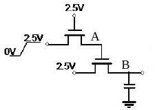
V_T = 0,5 V, gövde etkisi ihmal, sığaç başlangıçta boş. Giriş yükseldikten sonra kararlı durumda çıkış ne olur?
Yanıt (belgedeki): A noktası ilk transistörün source ucu olduğundan en fazla V_G − V_T'ye kadar yükselir: V_A = 2,5 − 0,5 = 2 V. "Aynı durum B için de geçerlidir": V_B = 2 − 0,5 = 1,5 V.
Not: Şekilde ikinci transistörün kapısı A'ya değil 2,5 V'a bağlı. B en fazla V_G − V_T = 2,5 − 0,5 = 2 V'a kadar çıkabilir ve drain'deki V_A = 2 V da bu değerdedir; dolayısıyla V_B = 2 V olmalıdır. 1,5 V sonucu, ikinci transistörün kapısı A'ya bağlı olsaydı geçerli olurdu.
Soru 3 (25p): Karmaşık kapıyı boyutlandırma
Devreyi NMOS/PMOS oranı 1/3 olan bir tersleyiciyle aynı akım sürme kapasitesine sahip olacak şekilde boyutlandırınız.
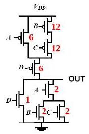
Yanıt belgesindeki boyutlar (kırmızı): PMOS ağında A = 6, B = 12, C = 12, D = 6; NMOS ağında D = 1, A = 2, B = 2, C = 2.
2009 Kısa Sınav-1 (09.03.2009)
Soru 1: Üç parçalı doğrusal VTC
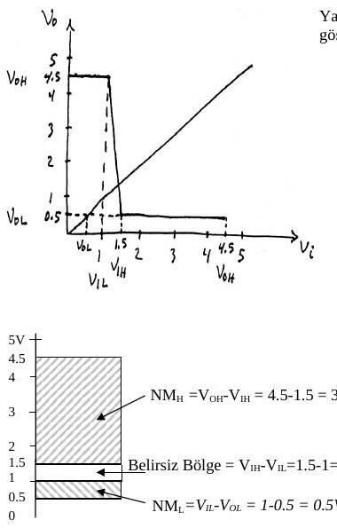
a) NM_H, NM_L, V_sw ve belirsiz bölgeyi dikey eksende gösteriniz. b) V_NSH, V_NSL, V_NIH ve V_NIL değerlerini bulunuz. c) Tersleyici kullanışlı mıdır? (V_M = 1,3 V.)
Yanıt:
- a) NM_H = 4,5 − 1,5 = 3 V; NM_L = 1 − 0,5 = 0,5 V; V_sw = 4,5 − 0,5 = 4 V; belirsiz bölge = 1,5 − 1 = 0,5 V
- b) V_NSH = V_OH − V_M = 4,5 − 1,3 = 3,2 V; V_NSL = V_M − V_OL = 1,3 − 0,5 = 0,8 V; V_NIH = V_NSH/V_sw = 3,2/4 = 0,8; V_NIL = V_NSL/V_sw = 0,8/4 = 0,2
- c) NM_L çok dar, VTC simetrik değil (V_M aşağıda) ve çıkış 0–5 V yerine 0,5–4,5 V salınıyor; tersleyici kullanışlı değil.
Soru 2: p-n eklemi
Ters kutuplanmış bir eklemde terminal akımı 8 nA, difüzyon akımı 4 nA. a) Drift akımı nedir? b) Sıcaklık azalırsa terminal akımı nasıl değişir? c) Terminaller arasında ölçülen gerilim kavramsal olarak neye eşittir?
Yanıt: a) I = I_S − I_D'den I_S = I_D + I = 4 + 8 = 12 nA. b) Sıcaklık azalırsa azınlık taşıyıcısı sayısı ve I_S azalır; terminal akımı da azalır. c) I = I_S − I_D dengesi oluşana kadar eşik (bariyer) gerilimi artar; V₀ ile yeni eşik gerilimi arasındaki fark terminaller arasında ölçülen V_R'dir. (Puanlar: 1-c 15p, diğerleri 17p.)
2009 Kısa Sınav-2 (20.04.2009)
Soru 1: Lateral diffusion
L = 0,25 µm bir CMOS transistörde C_GCD = 0,25 fF, aynı bölgede toplam gate sığası C_G = 0,7 fF ölçülüyor. Lateral diffusion x_d ne kadardır?
Yanıt: C_GCD yalnızca doğrusal (resistive) bölgede sıfırdan farklıdır ve ½ C_ox WL'ye eşittir; demek ki transistör doğrusal bölgede ve C_ox WL = 0,5 fF. Doğrusal bölgede C_G = C_ox WL + 2C_o W = 0,7 fF olduğundan 2C_o W = 0,2 fF, C_o W = 0,1 fF. C_o W = C_ox x_d W ve C_ox W = 0,5 fF / 0,25 µm = 2 fF/µm olduğundan x_d = 0,1 / 2 = 0,05 µm.
Soru 2: V_M için W_n/W_p
Yüksüz bir CMOS tersleyicide V_DD = 5 V, V_Tn = −V_Tp = 1 V, C_ox = 5 fF/µm², L = 2,5 µm, λ = 0, µ_n = 50.000 mm²/Vs, µ_p = 25.000 mm²/Vs. V_M = 2 V için W_n/W_p ne olmalıdır?
Yanıt: V_out = V_M olduğunda V_in = V_out = 2 V; V_GSp = V_DSp = −3 V, V_GSn = V_DSn = 2 V ve iki transistör de doyumdadır, I_Dn = −I_Dp:
- I_DSATn = ½ (W_n/L_n) µ_n C_ox (V_GSn − V_Tn)² = ½ (W_n/2,5)(50.000 × 10⁶)(5 × 10⁻¹⁵)(2 − 1)² = 50 × 10⁻⁶ W_n
- I_DSATp = −½ (W_p/2,5)(25.000 × 10⁶)(5 × 10⁻¹⁵)(−3 + 1)² = −100 × 10⁻⁶ W_p
- 50 × 10⁻⁶ W_n = 100 × 10⁻⁶ W_p ⇒ W_n/W_p = 2